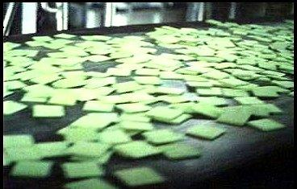

Soylent Green

This cult-classic will provide you with all the nutrition you need when the world food
supply is in jeopardy. Your guests will expect nothing when they see a "plant-based" meal in front of them.
You'll know the truth however.
Ingredients
- People
Steps
- Deliver your people to the factory.
- ????
- ???!
- ..??!
- Enjoy!